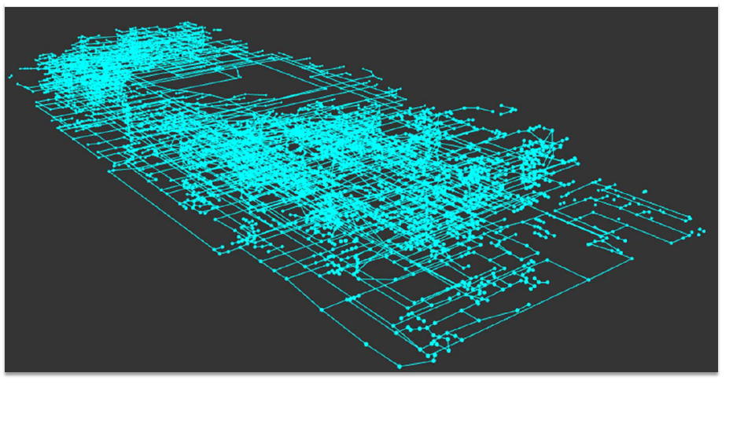
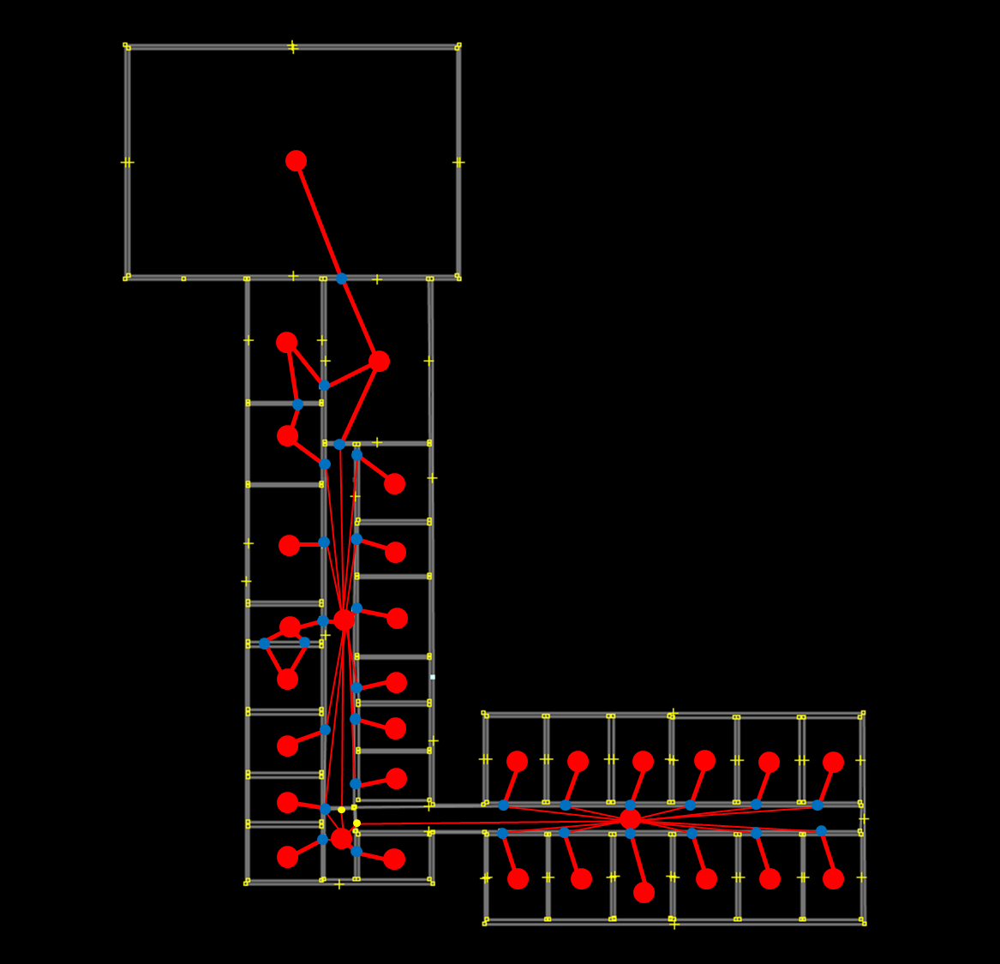

Resources
Documents and
Presentations
- OGC Tutorial - Indoor Spatial Information and IndoorGML, March, 2014, Mumbai
- IndoorGML - OGC
Candidate Standard for Indoor Navigation, Jiyeong
Lee and Ki-Joune Li, Invited Talk at ACM SIGSpatial Workshop on Indoor Spatial Awareness 2012
at Redondo Beach, CA, USA, Nov. 6, 2012
- Linking IndoorGML with CityGML,
Ki-Joune Li, CityGML
Workshop, Munich, Germany, June 21, 2013
- IndoorGML Workshop, Seoul, Korea, October 9,
2012
- IndoorGML - Candidate Standard for Indoor Navigation,
Ki-Joune Li, Seoul, Korea, October 8, 2012
XML Schema
IndoorGML is composed of two modules; core module and extension module for
indoor navigation, which are found at OGC IndoorGML
portal site; http://schemas.opengis.net/indoorgml/1.0.
- XML Schema 1.0.2 - IndoorGMLCore.xsd, IndoorGMLNavi.xsd
XML Schema 1.0 - IndoorGMLCore.xsd, IndoorGMLNavi.xsd
Data
- [Sept. 21, 2016] IndoorGML data (core and navigation modules) for Lotte World Mall
(IndoorGML 1.0)


-
- [June 3, 2015] Correction
of IndoorGML sample data with
external references to a CityGML data set according to IndoorGML 1.0.
- [Feb. 27, 2015] IndoorGML sample data with
external references to a CityGML data set according to IndoorGML 1.0.
- [May 20, 2014] IndoorGML core
data with external references to CityGML LoD 4 data. It is produced according to IndoorGML schema v.0.9.2 -IndoorGML sample
(with external ref. to a CityGML data set)
- [Sept. 17, 2013] IndoorGML
from I ndoor OpenStreetMap:
IndoorGML data Core, Original OSM data
This IndoorGML data is automatically derived from the original OSM data by the OSM2IndoorGML conversion tool. For more detail information, please contact with BG Kim, Pusan National Univ. It is produced according to IndoorGML schema v.0.7.2

- [Sept. 17, 2013] IndoorGML
and CityGML LoD 4
(Simple House): IndoorGML Core Module, CityGML LoD 4
This IndoorGML data is semi-automatically derived from the original CityGML data by the CityGML2IndoorGML conversion tool. It contains external references to objects in CityGML data. For more detail information, please contact with BG Kim, Pusan National Univ.
Tools
- [Sept. 21, 2016] Improved JINedit: Open Source (LGPL license)
- [Sept. 21, 2016] IndoorGML Viewer: Open Source (MIT license) - WebGL
- [Nov. 30, 2015] JINedit - a Java-based INdoorGML editor (core module and navigation module)
version 1.0: Open Source (GPL license, http://github.com/STEMLab/JInedit)
- [May 18, 2014] Sinedt - A simple IndoorGML
tool (Core Module - Version 0.9.2): Editing tool for IndoorGML
Core module based on blue print image developed by B.G. Kim of Pusan
National Univ.